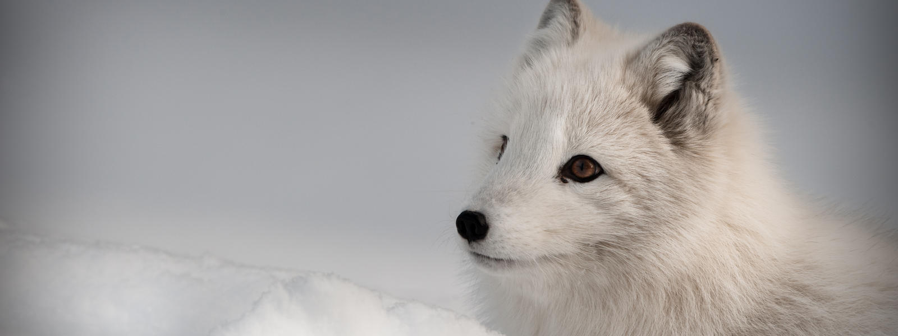

Sonic Enrichment for the Arctic Fox
Behavioral Background
For my Enrichment project earlier this semester, I did extensive research about the arctic fox. I was very interested in the animal and would look forward to continuing to work on this animal for my final project. This project would be centered around enrichment for arctic foxes that are in a zoo environment who don't often get the opportunity to hunt for prey and exercise their unique ability to pin-point the location of prey underneath layers of snow using their keen sense of sound and natural compass. I seek to produce a platform floor that the arctix fox would be able to approach during feeding time and then pounce to stop a sound that was playing underneath the floor in order to obtain the food. More details about the mechanics can be seen in Week 5.